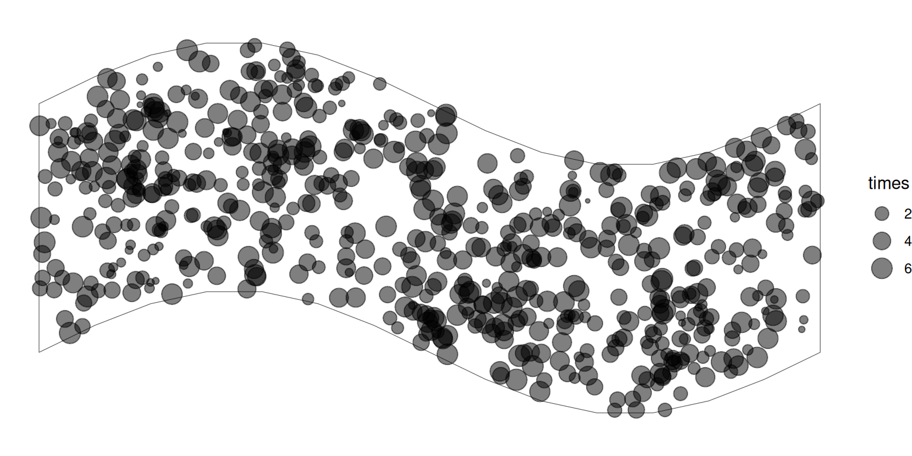
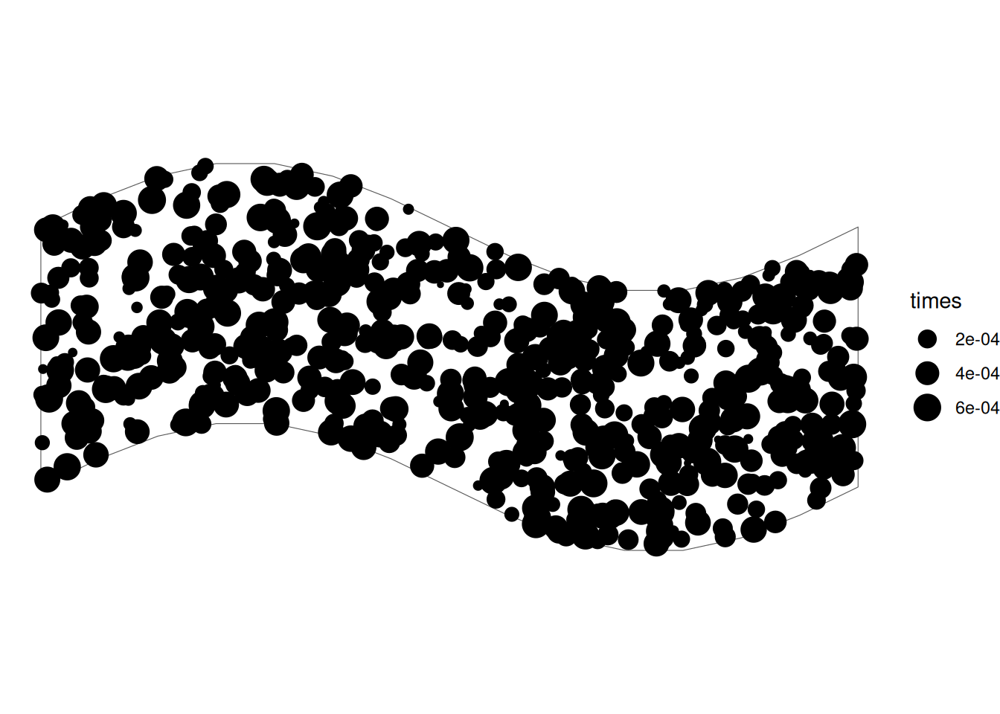
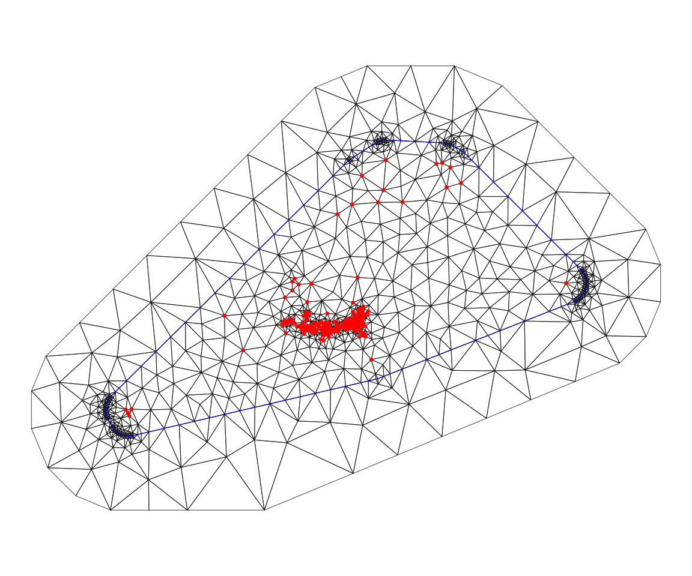
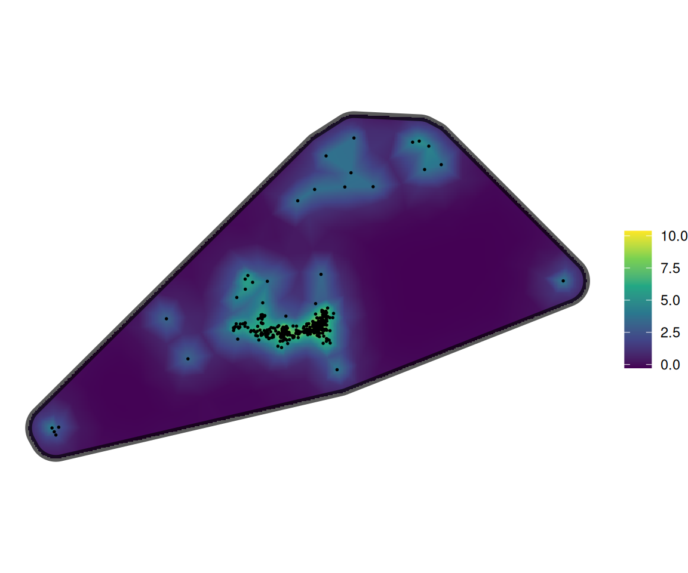
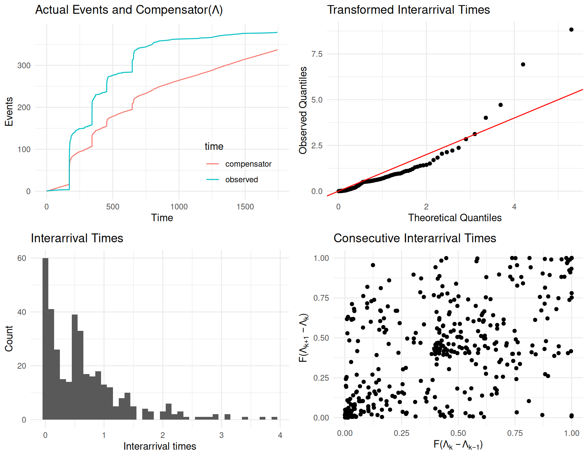

Packages used in this chapter
library(stelfi)
library(ggplot2)A spatiotemporal self-exciting model combines ideas from the Hawkes process (Chapter 2) and the LGCP (Chapter 6). Events have a time and a location, and each event temporarily increases the chance of further events nearby, in both time and space. Earthquake aftershocks, the spread of crime (“near repeat” burglaries), and outbreaks of disease are typical examples. The intensity used by stelfi (see Reinhart (2018)) is
\[\lambda(s,t) = \mu + \alpha \sum_{i:\tau_i<t} \text{exp}(-\beta (t-\tau_i))\, f(s - x_i), \tag{8.1}\]
where \(\tau_i\) and \(x_i\) are the time and location of event \(i\), and
Two extensions are available:
GMRF = TRUE replaces \(\mu\) with \(\mu(s) = \text{exp}(\beta_0 + G(s))\), where \(G(s)\) is a Gaussian random field as in an LGCP. Spatial covariates can also be included in the background via the covariates argument (one row per mesh node). This is important if some areas simply have more events than others, as otherwise this will be mistaken for self-excitement.time_independent = FALSE makes the spread of the kernel grow with time since the triggering event (its covariance is proportional to \(t - \tau_i\)), appropriate when the triggering mechanism travels at a finite speed. This is very memory intensive.get_coefs() reports mu and coefs (the log of the background rate, followed by any covariate coefficients), alpha, beta, xsigma, ysigma, rho, and, with GMRF = TRUE, the field parameters kappa and tau.
fit_stelfi() needs
times, a numeric vector of event times, sorted with no ties (exactly as for a Hawkes process, Section 2.1.1);locs, a data frame with columns x and y giving the location of each event, in the same order as times;sf, an sf polygon of the study region; andsmesh, a mesh of the study region (Chapter 5).Things to be aware of:
loc = locs) with a small cutoff, which gives small triangles where events are and larger ones elsewhere. fit_stelfi() gives a warning if the mesh looks too coarse for the estimated kernel, and the accuracy can be checked in more detail after fitting (Section 8.4).parameters is a list with coefs (the log of the background rate, or alternatively mu, the background rate itself; if neither is given a crude default is used), alpha, beta, xsigma, ysigma, rho, and, with GMRF = TRUE, kappa and tau. Choose xsigma and ysigma to be roughly the distance over which you expect triggering to occur, and \(\alpha < \beta\). The model can be sensitive to starting values, particularly with GMRF = TRUE, so it is worth trying a few.Data were simulated from Equation 8.1 within the (elliptical) study region of the xyt dataset (see Chapter 10), with background rate \(\mu = 1\), \(\alpha = 2\) and \(\beta = 4\) (so each event triggers on average \(2/4 = 0.5\) events), and a kernel with \(\sigma_x = 0.5\), \(\sigma_y = 0.25\) and \(\rho = 0\) (so triggering spreads twice as far in the x direction as in the y direction).
stelfi does not have a separate simulation function for this model. Instead, the fitted model object returned by fit_stelfi() has a simulate() method that simulates a new point pattern, over the same study region and time period, from the model with any given parameter values. So below the model is first fitted to the xyt data (the estimates themselves are not used), and the simulate() method is then called with the true parameter values. These must be given on the scale used internally by stelfi: the log of \(\mu\) (coefs), the logit of \(\alpha/\beta\), the logs of \(\beta\), \(\sigma_x\) and \(\sigma_y\), and \(\text{atanh}(\rho)\).
data(xyt, package = "stelfi")
domain <- sf::st_as_sf(xyt$window)
bnd <- fmesher::fm_as_segm(as.matrix(sf::st_coordinates(domain)[, 1:2]))
smesh <- fmesher::fm_mesh_2d(boundary = bnd, max.edge = 0.75, cutoff = 0.3)
fit0 <- fit_stelfi(times = xyt$t, locs = data.frame(x = xyt$x, y = xyt$y), sf = domain,
smesh = smesh, parameters = list(alpha = 1, beta = 3, xsigma = 0.3,
ysigma = 0.3, rho = 0))
truth <- c(mu = 1, alpha = 2, beta = 4, xsigma = 0.5, ysigma = 0.25, rho = 0)
set.seed(2)
sim <- fit0$simulate(par = c(coefs = log(1), logit_abratio = qlogis(2 / 4), log_beta = log(4),
log_xsigma = log(0.5), log_ysigma = log(0.25), atanh_rho = 0))
## sort the events by time
ord <- order(sim$times)
locs <- data.frame(x = sim$locs[ord, 1], y = sim$locs[ord, 2])
times <- sim$times[ord]The data are a vector of 653 sorted event times and a data frame of the corresponding locations:
[1] 0.03358241 0.06772843 0.08181107 0.11251337 0.12686070 0.15946748 x y
1 8.826292 0.4362811
2 1.623060 1.9839724
3 3.002040 1.5500167
4 12.269785 -1.6312990
5 4.870091 2.0044420
6 1.875491 -0.8504570In the plot below the size of each point shows its time.

stelfiThe study region is an sf polygon (here taken from the xyt data) and the mesh follows its boundary. These are the same as those used to simulate the data, but are repeated below so that the code needed to fit the model is all in one place.
domain <- sf::st_as_sf(xyt$window)
bnd <- fmesher::fm_as_segm(as.matrix(sf::st_coordinates(domain)[, 1:2]))
smesh <- fmesher::fm_mesh_2d(boundary = bnd, max.edge = 0.75, cutoff = 0.3)
area <- as.numeric(sf::st_area(domain))
param <- list(coefs = log(length(times) / (area * max(times))), ## log events per area per time
alpha = 1, beta = 3, xsigma = 0.3, ysigma = 0.3, rho = 0)
fit <- fit_stelfi(times = times, locs = locs, sf = domain, smesh = smesh, parameters = param)
stelfi <- get_coefs(fit)
stelfi Estimate Std. Error
mu 0.87003898 0.11358260
coefs -0.13921726 0.13054886
alpha 2.07847587 0.32230551
beta 3.23540777 0.49878254
xsigma 0.51336661 0.06922223
ysigma 0.27980110 0.03667293
rho -0.06769801 0.17842889To our knowledge no other R package fits exactly this model, so the estimates are compared with the true values and with a purely temporal Hawkes process fitted to the event times alone using hawkesbow (Cheysson (2021)). Ignoring space, the times follow (approximately) a Hawkes process with background rate \(\mu \times\) area, and the same \(\alpha\) and \(\beta\).
[1] 58.4609713 0.4361491 2.6692819fmt <- function(x) paste0(round(x[1], 3), " (", round(x[2], 3), ")")
params <- data.frame(
Truth = c(truth, truth["alpha"] / truth["beta"]),
stelfi = c(apply(stelfi[c("mu", "alpha", "beta", "xsigma", "ysigma", "rho"), ], 1, fmt),
round(stelfi["alpha", 1] / stelfi["beta", 1], 3)),
hawkesbow = c(round(bow[1] / area, 3), round(bow[2] * bow[3], 3), round(bow[3], 3),
"-", "-", "-", round(bow[2], 3)))
knitr::kable(t(params), col.names = c("$\\mu$", "$\\alpha$", "$\\beta$", "$\\sigma_x$",
"$\\sigma_y$", "$\\rho$", "$\\alpha/\\beta$"),
escape = FALSE)| \(\mu\) | \(\alpha\) | \(\beta\) | \(\sigma_x\) | \(\sigma_y\) | \(\rho\) | \(\alpha/\beta\) | |
|---|---|---|---|---|---|---|---|
| Truth | 1.00 | 2.00 | 4.00 | 0.50 | 0.25 | 0.00 | 0.50 |
| stelfi | 0.87 (0.114) | 2.078 (0.322) | 3.235 (0.499) | 0.513 (0.069) | 0.28 (0.037) | -0.068 (0.178) | 0.642 |
| hawkesbow | 1.163 | 1.164 | 2.669 | - | - | - | 0.436 |
stelfi recovers the true values reasonably well, including the shape of the spatial kernel. The purely temporal model gets the overall rate about right but is much less able to separate background events from triggered ones, since without locations it cannot tell whether two events close together in time were also close together in space.
The estimated spatial kernel is plotted below: triggered events are expected within the contours around a triggering event (at the centre).
plot_kernel <- function(pars, lim = 2) {
sigma <- matrix(c(pars["xsigma", 1]^2,
rep(pars["rho", 1] * pars["xsigma", 1] * pars["ysigma", 1], 2),
pars["ysigma", 1]^2), ncol = 2)
grid <- expand.grid(x = seq(-lim, lim, length.out = 200), y = seq(-lim, lim, length.out = 200))
grid$density <- mvtnorm::dmvnorm(as.matrix(grid), sigma = sigma)
ggplot(grid, aes(x = x, y = y, z = density)) + geom_contour(col = "black") +
coord_equal() + theme_minimal() + xlab("Distance in x") + ylab("Distance in y")
}
plot_kernel(stelfi, lim = 1.5)
The Canterbury earthquakes were modelled in time only in Section 3.3 and Section 4.3. Here their locations are included. To keep computation manageable, only the 379 earthquakes of magnitude 4 and above are used.
The earthquakes are projected to New Zealand Transverse Mercator (EPSG:2193) and converted to km. Times are in days since the first earthquake, jittered to remove ties (Section 3.3), and the data are sorted by time.
data(nz_earthquakes, package = "stelfi")
eq <- nz_earthquakes[nz_earthquakes$magnitude >= 4, ]
xy <- sf::st_coordinates(sf::st_transform(eq, crs = 2193)) / 1000
set.seed(1)
days <- as.numeric(difftime(eq$origintime, min(eq$origintime), units = "days")) +
runif(nrow(eq), 0, 1 / (24 * 60))
ord <- order(days)
times <- days[ord] - min(days)
locs <- data.frame(x = xy[ord, 1], y = xy[ord, 2])The catalogue does not come with a study region, so here the region is taken to be the convex hull of the earthquakes, extended by 20 km. In your own application the study region should reflect where events could have been recorded.
The mesh is built around the earthquakes with a small cutoff (1 km), so that triangles are small where earthquakes are (much smaller than the few km over which aftershocks are expected) and larger elsewhere.
[1] 1058
Two models are fitted: one with a constant background, and one with a spatially varying background (GMRF = TRUE). For the latter, starting values for the field are needed: here a range of about 40 km (\(\kappa = \sqrt{8}/40\)).
Estimate Std. Error
mu 7.964006e-07 8.271952e-08
coefs -1.404316e+01 1.038667e-01
alpha 2.011140e+00 2.346604e-01
beta 3.151287e+00 3.267650e-01
xsigma 4.331046e+00 2.836818e-01
ysigma 4.136255e+00 2.196112e-01
rho 1.404907e-01 8.753023e-02 Estimate Std. Error
mu 2.647461e-08 1.853138e-08
coefs -1.744708e+01 6.999680e-01
alpha 1.165141e+01 1.778824e+00
beta 2.382339e+01 3.526382e+00
xsigma 4.272094e+00 3.368492e-01
ysigma 3.712883e+00 2.542167e-01
rho 9.271387e-02 1.292039e-01
kappa 1.045373e-01 2.282845e-02
tau 1.027029e+00 2.077978e-01The two models are compared using AIC (the negative log-likelihood is stored in fit$objective; the models have 6 and 8 parameters).
constant GMRF
5809.910 5203.447 The model with a spatially varying background has a much lower AIC: some parts of the region have more earthquakes than others regardless of self-excitement, and without the field this is mistaken for triggering (compare the estimates of \(\alpha\) and \(\beta\) for the two models). The estimated background field is shown below.

From the model with the spatially varying background:
stelfi integrates the spatial kernel of each event over the study region using the mesh. For an event well inside the region the integral should be close to 1 (and less than 1 for an event near the edge). This can be checked by comparing the mesh-based integral with an accurate Monte Carlo estimate (the proportion of points simulated from the kernel that fall inside the study region).
kernel_volume <- function(pars, locs, sf, smesh, n_mc = 2000) {
sigma <- matrix(c(pars["xsigma", 1]^2,
rep(pars["rho", 1] * pars["xsigma", 1] * pars["ysigma", 1], 2),
pars["ysigma", 1]^2), ncol = 2)
w <- get_weights(smesh, sf)$weights
window <- spatstat.geom::as.owin(sf)
t(sapply(seq_len(nrow(locs)), function(i) {
centre <- unlist(locs[i, c("x", "y")])
mesh <- sum(w * mvtnorm::dmvnorm(smesh$loc[, 1:2], mean = centre, sigma = sigma))
draws <- mvtnorm::rmvnorm(n_mc, mean = centre, sigma = sigma)
mc <- mean(spatstat.geom::inside.owin(draws[, 1], draws[, 2], window))
c(mesh = mesh, monte_carlo = mc)
}))
}
set.seed(1)
vol <- kernel_volume(pars_eq, locs, domain, smesh)
summary(vol) mesh monte_carlo
Min. :0.9533 Min. :1
1st Qu.:1.0395 1st Qu.:1
Median :1.0552 Median :1
Mean :1.1871 Mean :1
3rd Qu.:1.0958 3rd Qu.:1
Max. :4.3112 Max. :1 For 77% of the earthquakes the mesh-based integral is within 0.1 of the Monte Carlo value. Where they differ a lot (typically isolated earthquakes in parts of the region where the mesh is coarse) the mesh should be refined.
Integrating Equation 8.1 over the study region gives the intensity of the event times, which is a marked Hawkes process (Chapter 3) with background rate \(\int \mu(s) ds\) (the background integrated over the region) and with the mark of each event being the integral of its kernel over the study region (the Monte Carlo values above). The goodness-of-fit checks of Section 2.4 can therefore be applied to the times, using show_hawkes_GOF() with a list containing the times, the parameters, and the marks.
Asymptotic one-sample Kolmogorov-Smirnov test
data: interarrivals
D = 0.13831, p-value = 1.047e-06
alternative hypothesis: two-sided
Box-Ljung test
data: interarrivals
X-squared = 70.598, df = 1, p-value < 2.2e-16
As for the purely temporal models of the earthquakes (Section 3.4), the tests reject the model and the plots show the same features: the exponential decay in time cannot describe both the burst of activity immediately after a large earthquake and the long tail of aftershocks that follows, and every earthquake is assumed to trigger equally regardless of its magnitude. Adding space improves the description of where aftershocks occur, but does not fix these temporal limitations.